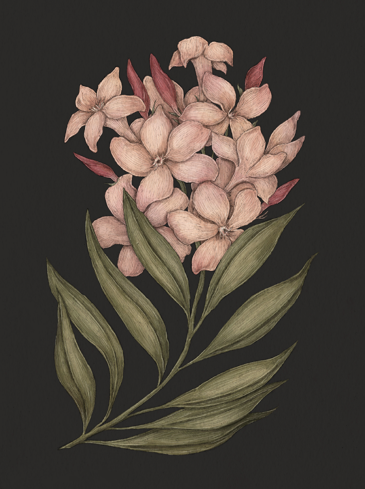

The Language of Flowers
Oleander

Oleander
Nerium oleander
Meaning
Caution
Origin
The Victorians assigned the meaning of "caution" to the oleander, perhaps because the plant is
poisonous, but also because of its association with the Greek cautionary myth of Hero and Leander.
The two were in love, and although they lived on opposite sides of the Hellespont Sea, Leander swam
across it every night to visit Hero. One night, during a violent storm, Leander died while trying to
swim to his love in the rough waters. When Hero saw Leander's body washed ashore, she called out,
"O, Leander! O, Leander!" and drowned herself to be with him in death.
Pair With
- Azalea to warn someone they're about to make a poor choice
- Sunflower to caution a friend against a bad investment